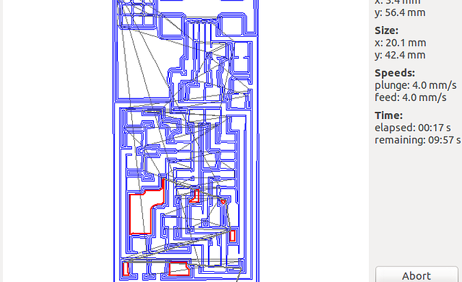
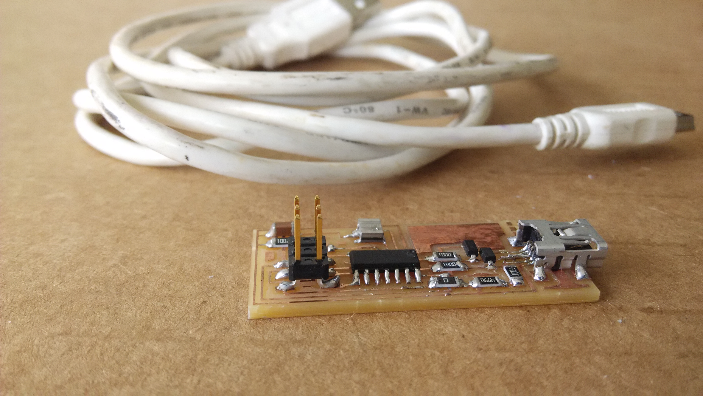
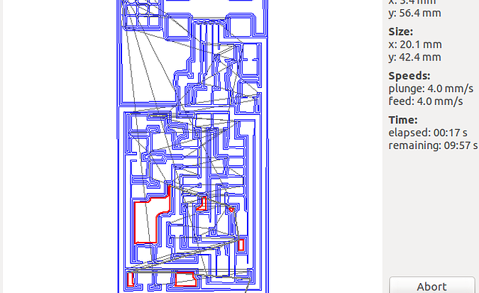
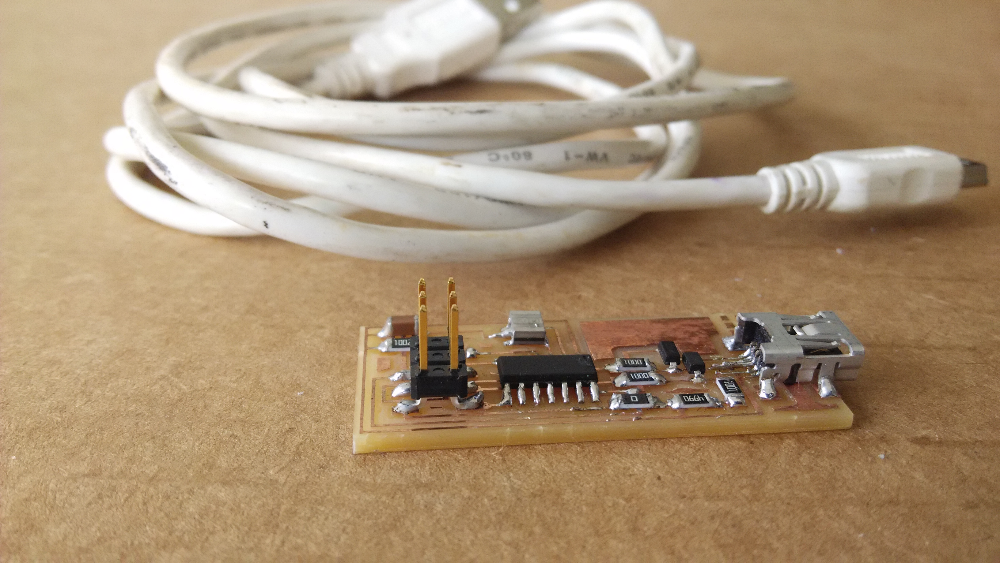
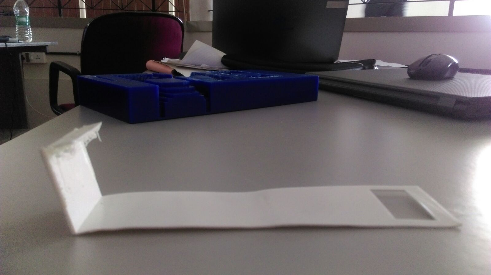
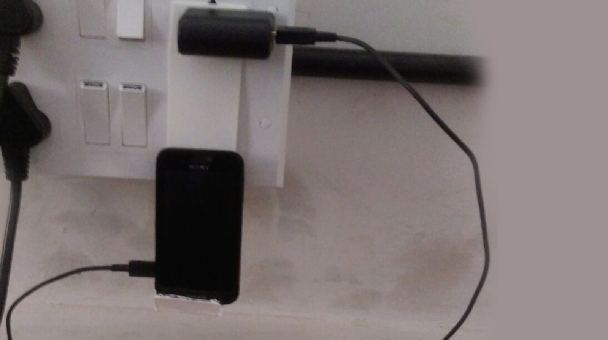
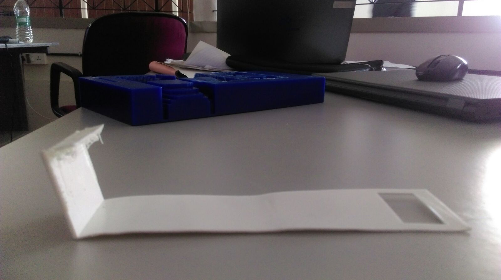
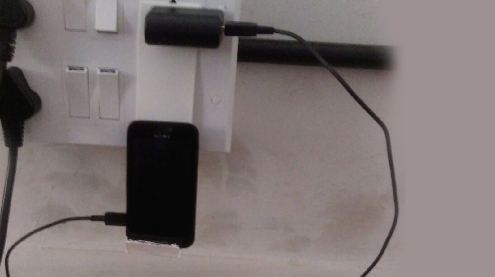

Week 3
Electronics & Programming
Day 1: FabISP
Programmer
Proper use of the heat gun. Remember to put it in cold air after use until no heat comes out.
Soldering SMD components
It’s not like painting. Doesn’t work like this. Soldering Iron in, Solder in, Solder out, Soldering Iron out.
Use the double side tape to fix the board to the table
Start with the microcontroller, continue towards the perimeter
Easy with the tweezers
Soldering day - No coffee
Use good lighting and loupes
In groups of 2 people, Fabricate the Fab ISP
Prepare the Roland Modela bed and sacrificial layer
Download from Fab Academy Electronics production week or follow http://fabacademy.org/archives/2015/doc/electronics_production_FabISP.html
Mill traces, cut board
Stuff
Program and Debug http://fabacademy.org/archives/2015/doc/programming_FabISP.html
File
 FabISPtraces.png
FabISPtraces.png
 FabISPinterior.png
FabISPinterior.png
 FabISP.png
FabISP.png
Material Used :
Copper cladmachineused :
Modella 



Basic Electronics
Shopbot
Michael Mathews
Basics about electronic components
Basics about microcontrollers
Registers
Fuses (HIGH, LOW, EXTENDED) Tutorial: http://fabacademy.org/archives/2015/doc/fuses.html
Interrupts
ADC
Modifying CAD Files with kokopelli
Crash course: http://fabacademy.org/archives/2013/students/sanchez.francisco/weekly-assignments/week-06/index.html Changing the output
Adding components
Adding traces
Advanced: Creating your own components
Advanced: Non rectangular cutouts
Assignment: Add an LED and a button to Hello World board
From line 5593 onwards where "#define board " - change the parameters like width of line, board width and length etc.
#
# define board
#
w = .016
width = 1
height = .93
mask = .004
x = 1
y = 1
z = -.005
d = .06
It is not recommend below for trace width(w) to be lesser than 0.012. Assign intelligent values for these parameter and let it remain default unless theres a problem.
Design
The following editions were committed in the file. this code is added under #define board and before #select ouput. The PCB had trouble with placingthe 6mm push button, hence we had to resize the board make it wide and reposition IC. Code:
# define board
#
w = .016
width = 1.2
height = .93
mask = .004
x = 1
y = 1
z = -.005
d = .06
....Uneditted code
.
.
# repositioned the IC. Every other element seems to #positioned relative to the ic.
pcb = wire(pcb,w, IC1.pad[13],
point(IC1.pad[13].x+.105,J2.pad[4].y,z),
J2.pad[4])
.
.
.
#adding led
LED1=LED_1206('Led') #usually the format is like component_size('name')
pcb= LED1.add(pcb,XTAL1.x,IC1.pad[5].y,z,180) #showing the led
R2=R_1206('R2\n1k') #adding resistor and naming it "R2 1k"
pcb= R2.add(pcb,LED1.pad[2].x,LED1.y-0.15,z,-90)
B1=button_6mm('B1') #adding push button
pcb=B1.add(pcb,LED1.x+0.2,J1.y+0.05,z)
pcb = wire(pcb,w, #adding traces
IC1.pad[5],
LED1.pad[1])
pcb = wire(pcb,w,
LED1.pad[2],
R2.pad[1])
pcb = wire(pcb,w,
J1.pad[6],
R2.pad[2]
)
pcb = wire(pcb,w,
IC1.pad[6],
B1.pad[4]
)
pcb = wire(pcb,w,
J1.pad[6],
B1.pad[3]
)
Exporting as .png
(make sure you name the file with the extension or else the export wont work and throw an exception)
Files
hello.ftdi.44.cad hello.ftdi.44.png
hello.ftdi.44.png
Programming
Arduino ide- most user-friendly, many tools, quick, easy
C - intermediate difficult, need to have more hardware knowledge, more efficient in code handling and storing, more freedom to program.
Assembly lowest level of programing, need to have through understanding of the hardware also, more difficult, highly efficient in code handling and occupies least storage, and allows most freedom to program.
Basics about programming
Add Author, date, description and license
Always comment your code
Init and loop parts
Digital output
Analog output (PWM)
Digital input
Analog input (ADC) 8 bit/10bit
Pull up down resistors (10k)
Multitasking? Polling
Debounce buttons
Programming. 3 paths depending on proficiency:
Beginners: Arduino IDE
Intermediates: C
Advanced: Assembly
Why C? https://www.youtube.com/watch?v=ERY7d7W-6nA&feature=youtu.be
Why Assembly? https://en.wikipedia.org/wiki/Apollo_Guidance_Computer
Assignment
Make LED blink
Turn ON/OFF LED
Serial communication (send something to computer, read something from computer)
Files
blink.ino
blink_serial.ino
blink_switch.ino blink_keyboard.ino
 



Video Conferencing
How to Use mcu.cba.mit.edu
How to acess Diffrent Channels
Steps for Completing a Fab Project
Installed Ekiga and Tested Communication
Line with 1Mbps Uplink at least. If only 1Mbps Uplink is avaliable then dedicated line recommended.
Software
Mac and Windows: Chrome Addon Jabber Call
Ubuntu: Ekiga or Linphone
Connections
Lab Connection: mcu.cba.mit.edu
Individual connection: mcuc.cba.mit.edu
Normally only lab connects to MCU. Individual only for special reasons: Travel, illness...
Important Rooms
1 Fab Labs
4 Class (protected by pin number) Pin shared at Fab Academy start
Booking a room (Specify timezone): https://docs.google.com/spreadsheets/d/1eZUNi7_2wsY3-YTyPQIBnljpAxztgQfcJgpNATWwn-w/edit#gid=0
Muting
Local mic mute. Check that always is muted except for talking
MCU mute. By default your are muted. Check that your microphone is locally muted and then to toggle MCU unmuted/muted dial *6
After talking remember to locally mute your mic again
Wednesday Class
Class starts at 9 AM Boston Time (EDT) Check your local time every week: http://www.thetimezoneconverter.com/
Lab Manager joins at 8:30 AM EDT for class preparation
Beware winter/summer time changes. Not the same all around the world
If connection does not work for some reason do not hammer the entire class mailing list. Check first with other people to see if it is a local or global problem.
Setting up the scene
World is watching and listening to you. Prepare a nice looking environment
Check Focus is correct, lighting is enough
Avoid bright backgrounds
Frame the entire class
Have a seat near the mic and camera for the person showcasing
Assignment: Check the time in Boston, Taipei and Barcelona and talk to them in the Fab Lab Room. Mute/Unmute in MCU. Prepare the lab for videoconferencing.